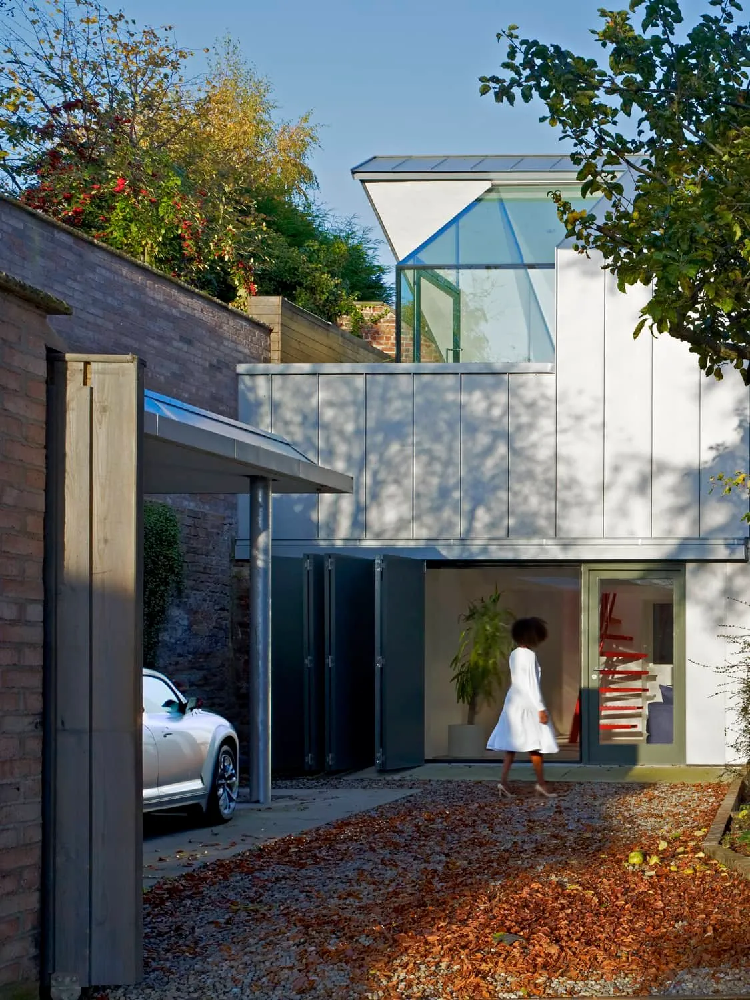
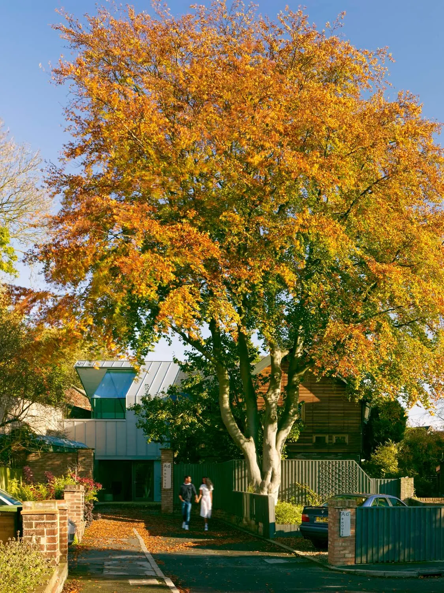
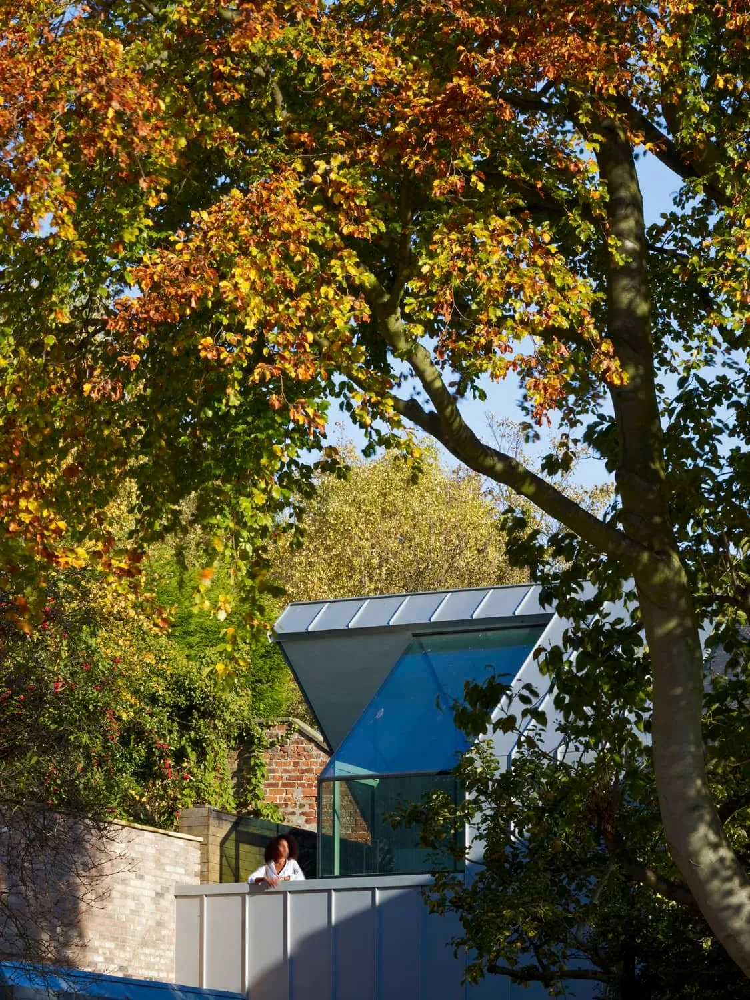
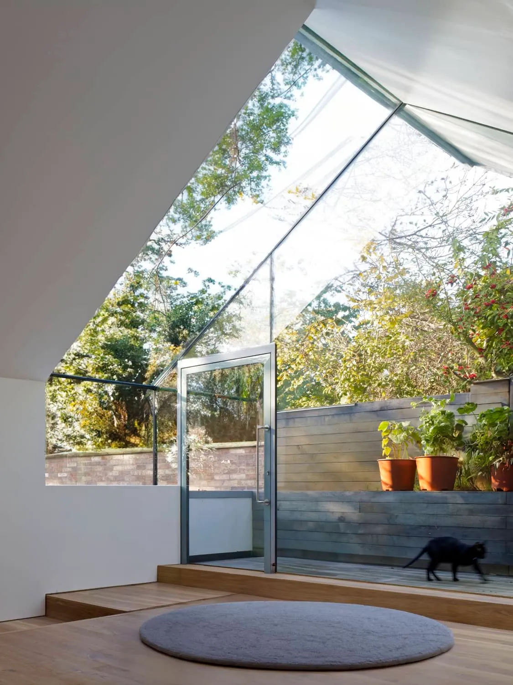
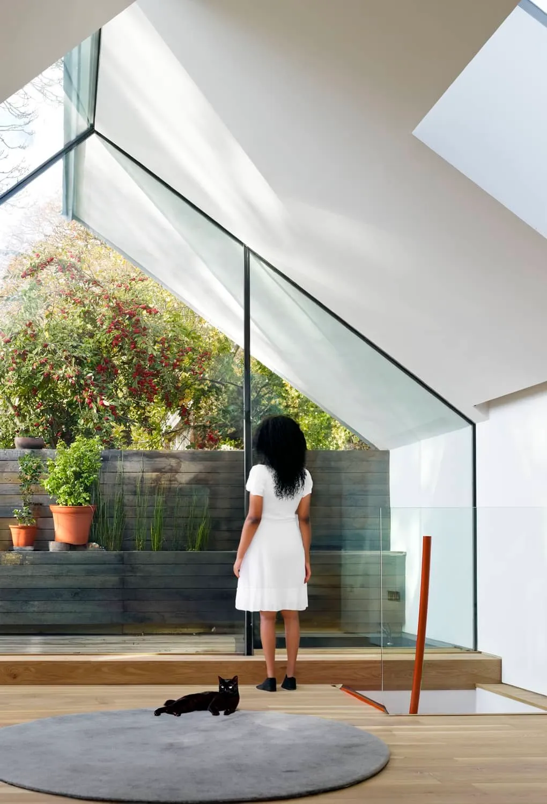

AD House
A two-storey extension and new garage to a contemporary home in a York conservation area, with a cut-and-folded pitched roof and recycled zinc cladding.
A folded roof, west-facing.
The clients have a long family history in the seed trade and wanted an extension that connected the house to its plot — somewhere to plant, somewhere to look out over the garden, and an evening room glazed to the west to catch the late sun.
The new wing is a two-storey extension and a small garage, cut into the corner of the existing house. A spacious upper-floor living room is generously glazed to the west; a red stair drops to a studio at ground level.
The roof reshapes the usual pitched form: a cut and a fold that lets the sun reach all the way into the depth of the plan, and frames views back out to the trees. Externally, sustainably sourced timber forms the primary structure; the cladding is recycled zinc — a self-finish material with a much lower ore demand than aluminium or copper, and one that ages itself.
RIBA Award winner; RIBA Stephen Lawrence Prize shortlist; RIBA Blue Ribbon Ideal Home of the Year 2013.




"The standard of their professional approach to the whole project was excellent, and I would recommend them to any party."
Jonathon Woodhouse, client
What it's made of.